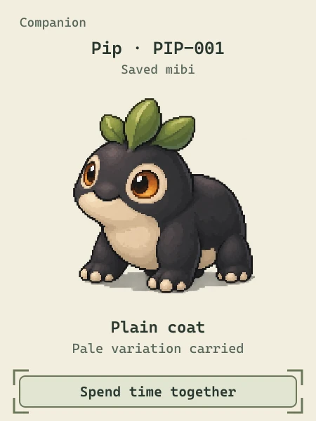
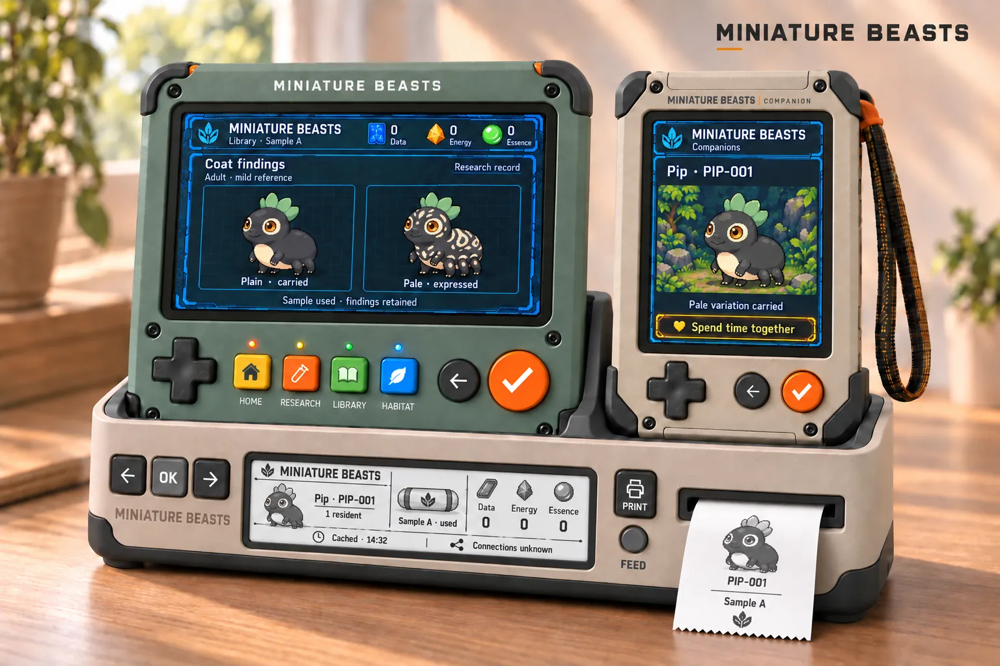
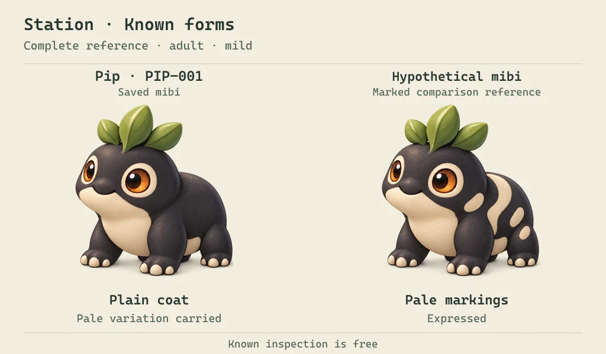
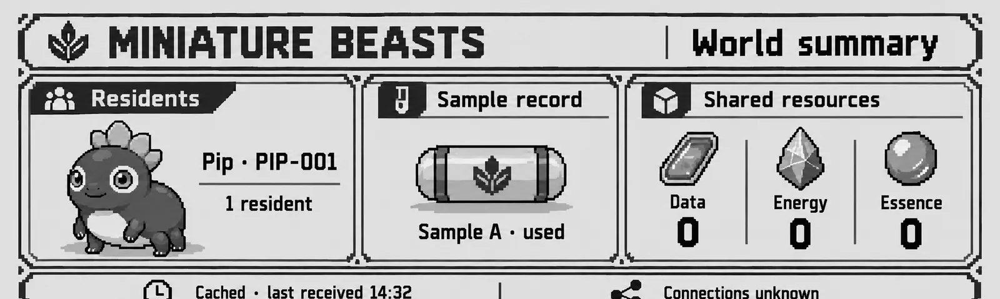
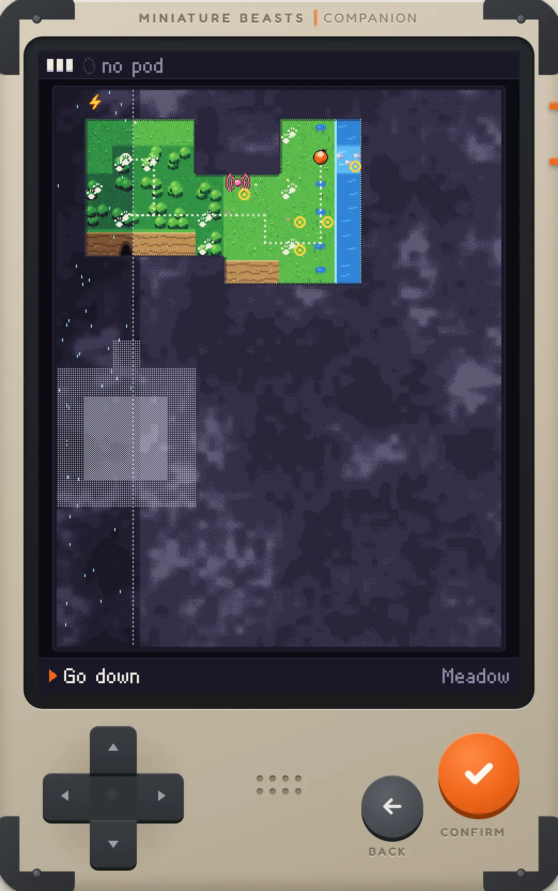
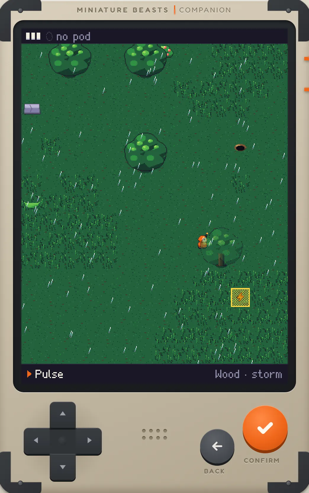
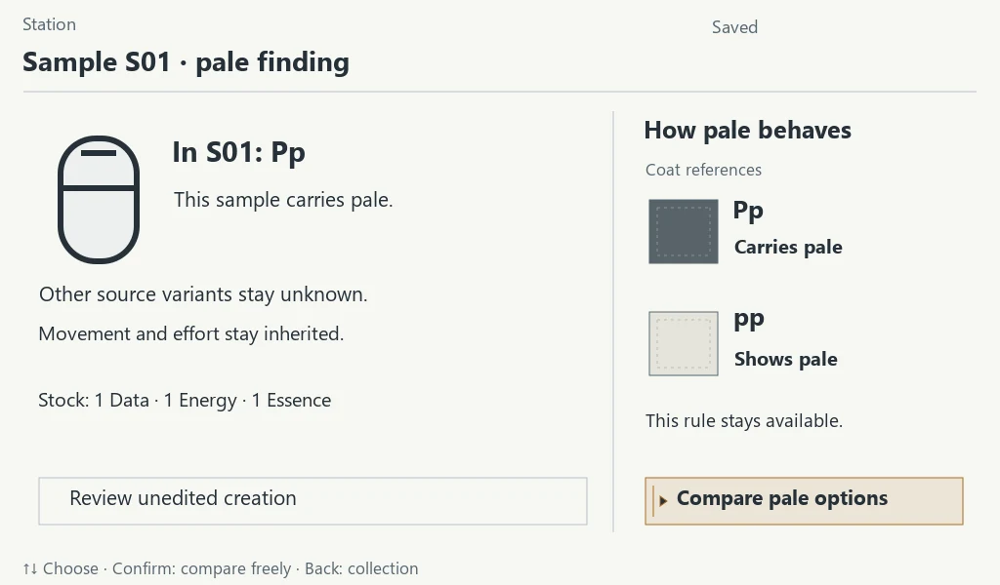
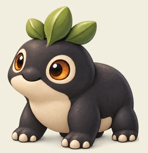
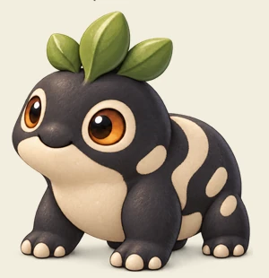

Companion
Pocket device · 450×600 colour screen
Take it on expeditions. In Probe mode you walk the world map and go down into living places. At home, the mibi riding with you lives on its screen.

A creature game you can hold
Explore a fogged world on a pocket Companion, bring sealed seed-pods home to a Station, and find out what’s inside. Every creature you raise, a mibi, runs on genes that really work.
In development, in the open, by Dirty Pawz Press in Mexico City. The exploration prototype runs in your browser today; the devices are still concept art.

Three devices, two screens
Not an app on a phone. A pocket device for going out, a home device for working things out, and a dock that keeps them together. Each part of the game has its own place, and its own buttons.
Pocket device · 450×600 colour screen
Take it on expeditions. In Probe mode you walk the world map and go down into living places. At home, the mibi riding with you lives on its screen.

Home device · 1024×600 colour screen
Hold it with both thumbs or play it flat on the table. It opens your pods, runs research and incubation, and keeps your collection on an always-on screen, with your mibis living in a vivarium.

Dock · e-paper summary · printer
Set both handhelds down and they charge, ready for the next session. A quiet four-grey screen shows your world at a glance, and a small printer puts a mibi on paper.

One mibi, one identity: the same individual on the Companion, the Station and the paper card.
An expedition
This part already plays. These screens come from the rough playable in the sandbox: real rules, tokens for creatures, no finished art.
No timers. The world moves only when you move or act, so you can stop and think. Designed for the next build: a Call button that pulses, lures and pins; a Shield the storm wears down; Probe tiers that reach further into the fog.


Back at the Station
One pod makes one mibi. You can hatch it as it is, or study it first and choose from what it already carries. Designed, not built yet

Three supplies, each from something you do on an expedition, each with a job at the Station.
Charge drawn from storm-struck stones. It runs every machine: the Probe in the field, identifying and incubating at home.
Creature moments you cause: one eats your fruit, shakes dry or settles because of you. The Station reads genomes against them.
Living matter: dew, pressed fruit, a shed tuft. It’s what a new body is grown from, and bigger bodies need more.
Real genetics, under the fur
A mibi’s looks and abilities come from its genome, and the genes follow real inheritance. You learn it by looking and breeding, not by reading.
Pip’s pale markings are recessive. A plain Pip can carry pale without showing it. Breed two carriers and about one child in four comes out marked.

PpPlain, carries palePpPlain, carries paleTheir children can be
PPPlainPpPlain, carries pale
ppPale markingsThe long game
Keep a mibi, or bond with it and bring it along. Pretty, rare, capable or just loved: you choose what you’re after.
A bonded mibi helps with its own abilities. In the sandbox a burrower digs open a narrow burrow, a hopper keeps wary creatures calm, a puffcap sniffs out buried pods. You can always explore alone; partners take you further.
In the rough playable
A juvenile rides in the Companion while it trains, and comes when you Call. Adults come on expeditions. Elders stay partners with new strengths.
Designed, not built yet
Breed for a marking, an ability or a lineage you love. Every child is new, and remembers where its genes came from. Only bonded mibis need care; the rest never wait on you.
Designed, not built yet
Open source, all of it
The code, the game design, the genetics and the hardware are being made in public. Every decision and every open question is written down.
The devices are planned around ESP32 chips and a Raspberry Pi, with native firmware. Cases will be 3D printed in small batches and put together with common tools.
Software AGPL-3.0 · hardware CERN-OHL-S-2.0 · documentation and art CC BY-SA 4.0.
The exploration prototype, straight from the repository. One Companion screen in your browser: fog, living places, a storm and seed-pods. Tokens instead of art; rules first.
Play the exploration field test
Arrow keys to walk · Enter to confirm · Esc for the menu
build pending
Short answers. The design documents have the long ones.
The game is being designed and built now. The exploration prototype is real and playable in your browser. The device pictures are concept art: nothing physical has been built yet, and the plan is to prove the game in software and playtest it before making boards and cases.
There’s no date and no price. Follow the roadmap on GitHub to see what’s being built and what comes next.
Not yet, because the hardware isn’t designed. When it is, the boards and cases will be published as open hardware, to be printed and assembled with common tools. The software is open source already.
No. It’s designed for its own devices, with physical buttons and no touch shortcuts. The prototypes run in a browser so people can play them while the hardware is worked out. If dedicated hardware doesn’t work out, the fallback is a mobile app.
No. Children can play by looking, comparing and breeding. The real framework underneath is there for anyone who wants to dig in.